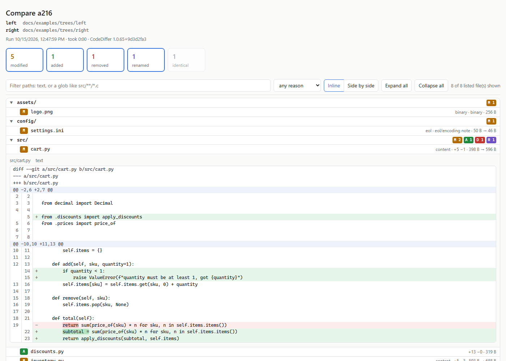
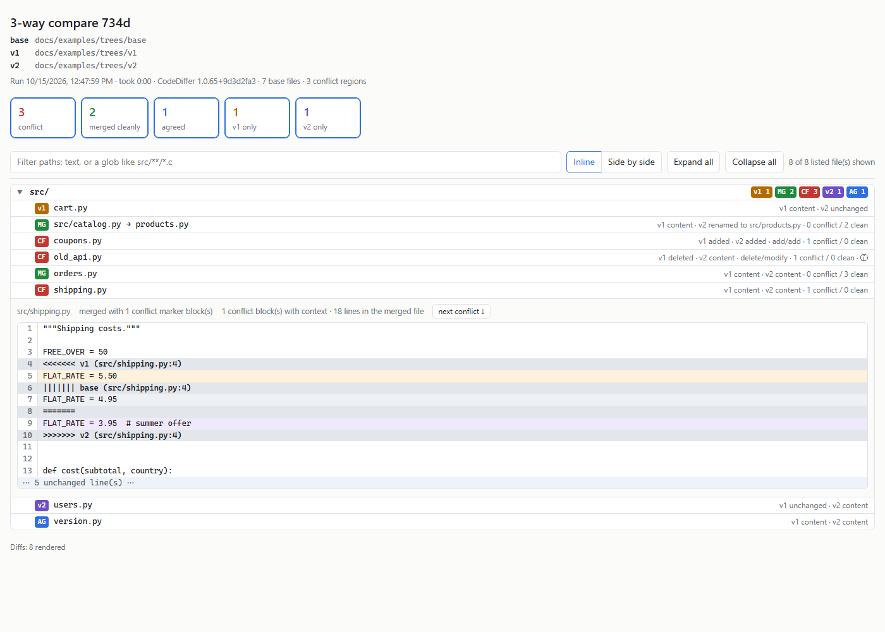

CodeDiffer report examples
The HTML report CodeDiffer writes for a compare, made from a small made-up project with one file for each kind of change. Click a file to open its diff.
- 2-way compare: modified (content, whitespace, line endings, binary), added, removed, renamed with an edit.
- 3-way compare: a clean merge, a merge across a rename, conflicts (content, add/add, delete/modify), one-sided and agreed changes.
Regenerated by docs/examples/make-examples.ps1 in the repository.

